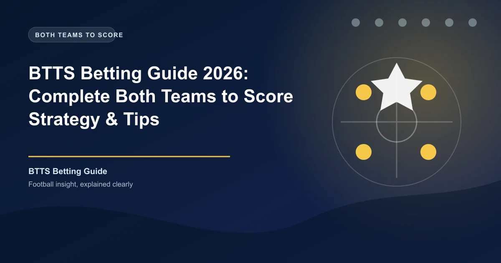

Both Teams to Score is one of the most accessible markets in football betting — but accessible doesn't mean simple. With BTTS Yes typically priced between 1.60 and 2.00, you're getting near-even odds on an outcome that occurs in roughly 50% of matches across Europe's top leagues. The margins are thin, and the bettor who treats BTTS as a coin flip will lose their bankroll to the bookmaker's edge.
This guide takes BTTS seriously. We cover the statistical framework, league-level and team-level analysis, matchup theory, market-specific strategies, in-play tactics, and a complete pre-match routine you can apply to every fixture you analyse.
BTTS betting asks a single binary question: will both teams score at least one goal during regulation time (90 minutes plus stoppage time)? Extra time and penalties do not count unless the market specifically states otherwise.
You have two options:
The market's appeal is that it removes the need to predict a winner. A 1-1 draw and a 4-3 thriller both pay the same on BTTS Yes. This makes it ideal for matches where you expect goals but cannot confidently pick a result.
Match: Liverpool vs Manchester City
BTTS Yes: 1.70 | BTTS No: 2.15
You stake ?20 on BTTS Yes. The match ends 2-2. Your return is ?20 ? 1.70 = ?34.00 (?14.00 profit).
If it ends 2-0 to Liverpool, you lose the full stake.
Bookmakers offer BTTS across virtually every football market — Premier League, Champions League, Serie A, MLS, even lower-league matches. The depth of liquidity varies, so you may find better prices on major leagues where multiple bookmakers compete for your stake.
Before placing any BTTS bet, compare odds across bookmakers on OddsPortal. A difference of 0.05-0.10 on a BTTS Yes price is common across bookmakers and directly impacts your long-term profitability. At 1.70 vs 1.80, the break-even rate drops from 58.8% to 55.6% — a 3.2% edge you get just by price shopping.
Every BTTS bet is a probability assessment. The bookmaker's odds imply a probability, and your job is to decide whether the true probability is higher (back Yes) or lower (back No) than that implied figure.
Implied probability formula:
Example calculation: If BTTS Yes is priced at 1.75, the implied probability is 1 / 1.75 ? 100 = 57.1%. You need BTTS to land at least 57.1% of the time to break even on this bet.
| BTTS Yes Odds | Implied Probability | Break-Even Win Rate |
|---|---|---|
| 1.60 | 62.5% | 62.5% |
| 1.65 | 60.6% | 60.6% |
| 1.70 | 58.8% | 58.8% |
| 1.75 | 57.1% | 57.1% |
| 1.80 | 55.6% | 55.6% |
| 1.85 | 54.1% | 54.1% |
| 1.90 | 52.6% | 52.6% |
| 2.00 | 50.0% | 50.0% |
Expected Value (EV): The single most important concept in betting. EV = (Probability ? Odds) - 1. A positive EV means the bet is profitable over the long run.
You estimate BTTS Yes has a 60% chance of landing. The bookmaker offers 1.80.
EV = (0.60 ? 1.80) - 1 = 1.08 - 1 = +0.08 (+8%)
You have an 8% expected return on every pound staked. Over 100 bets at ?10 each, you expect ?80 profit.
Professional BTTS bettors aim for a 55-60% win rate while targeting odds of 1.70-2.00. The combination of a moderate win rate and value odds creates a sustainable edge. At 1.70 with a 60% win rate, your ROI is 2% per bet. At 1.90 with the same win rate, ROI jumps to 14%.
League characteristics are the foundation of BTTS analysis. Attacking football cultures produce more BTTS outcomes than defensive ones, and knowing which leagues consistently deliver is essential for efficient bankroll deployment.
| League | BTTS % (5-Year Avg) | Avg Goals/Game | BTTS Value Rating | Key Characteristic |
|---|---|---|---|---|
| Eredivisie | 64-68% | 3.2 | High | Open football, weak defences, Dutch tradition |
| Bundesliga | 58-62% | 3.1 | High | High-tempo, attacking transitions, GKs exposed |
| Swiss Super League | 56-60% | 2.9 | High | Underpriced by bookmakers, quality variance |
| English Championship | 52-56% | 2.7 | High | Competitive balance, defensive inconsistency |
| Premier League | 50-55% | 2.8 | Medium | Elite defences lower BTTS; matchup-dependent |
| Austrian Bundesliga | 52-56% | 2.8 | Medium-High | Underfollowed league, softer odds |
| Belgian Pro League | 50-54% | 2.7 | Medium | Unpredictable, good for BTTS No contrarian plays |
| Ligue 1 | 48-53% | 2.6 | Medium | PSG distorts data; midtable is more open |
| La Liga | 46-50% | 2.5 | Low-Medium | Big gap between top and bottom defences |
| MLS | 50-54% | 2.9 | Medium | High goals but odds adjust quickly |
| Serie A | 44-48% | 2.6 | Low | Defensive tradition, tactical discipline |
| Primeira Liga | 44-48% | 2.4 | Low | Low-scoring, Big Three dominate clean sheets |
| Scottish Premiership | 48-52% | 2.8 | Low-Medium | Celtic/Rangers skew; rest of league is open |
| Liga MX | 52-56% | 2.8 | Medium-High | Attacking culture, lower defensive standards |
| J1 League | 46-50% | 2.6 | Low-Medium | Disciplined defences, limited data availability |
Don't just bet on high-BTTS leagues blindly. The market prices known data. The Eredivisie's 66% BTTS rate is already reflected in shorter odds. The real value comes from identifying matches where the league averages suggest one outcome but specific team analysis reveals the opposite.
The most profitable approach is league specialisation. Focus on two or three leagues and learn them deeply. You'll develop pattern recognition for which matchups produce BTTS, which teams are structurally vulnerable, and where the bookmaker consistently misprices. The Championship, Swiss Super League, and Austrian Bundesliga are excellent starting points because they receive less analytical attention from bookmakers.
League data sets the context. Team-level data determines the bet. Every football team has a distinct profile for both scoring and conceding, and these profiles often diverge significantly between home and away environments.
Core metrics for BTTS team analysis:
A team might score in 75% of home matches but only 55% away. Another might concede in 70% of away games but keep clean sheets in 40% of home matches. These splits matter enormously for BTTS analysis.
| Team Profile | Scoring % | Conceding % | BTTS Match % | BTTS Analysis |
|---|---|---|---|---|
| Attacking powerhouse | 80%+ | 40-50% | 40-50% | Often wins to nil — BTTS No candidate vs weak opponents |
| Open, entertaining | 65-75% | 60-70% | 55-65% | Ideal BTTS Yes team — scores and concedes regularly |
| Defensive, counter-attacking | 45-55% | 40-50% | 30-40% | BTTS less likely — games are controlled and low-event |
| Relegation battler | 40-50% | 65-75% | 35-45% | Concedes often but may not score — mixed BTTS profile |
Use FBref for comprehensive team scoring and conceding stats, split by home/away. WhoScored provides team form guides with match-by-match breakdown. SofaScore offers live BTTS tracking during matches. For historical team-level BTTS data across multiple seasons, Soccerway has the deepest archive.
Whether a team scores depends on two things: creating chances and converting them. Expected Goals (xG) measures the first factor, shot conversion rates measure the second.
Key attacking metrics for BTTS:
A team creating 1.8 xG per game but scoring only 1.0 goals per game is due for positive regression. Conversely, a team scoring 2.0 goals per game from 1.2 xG is overperforming and likely to cool off. Betting on BTTS Yes against a team that's been lucky to score is a mistake — the goals will dry up.
Understat provides detailed xG data for the Big 5 European leagues. Check each team's xG for and xG against over the last 5-10 matches, not the season average. Recent xG trends are more predictive than full-season numbers because they reflect current form, tactical adjustments, and personnel changes.
Scoring form trends: A team that has scored in 8 of its last 10 matches is a reliable scoring threat. A team that has scored in 3 of its last 10 is a guessing game. Look for streaks in both directions — they are more predictive than raw percentages over a full season.
Defensive analysis is where most casual BTTS bettors fall short. They focus heavily on attacking output and neglect the conceding side. But BTTS requires BOTH teams to score — so a team's defensive vulnerability is equally important as its attacking capability.
Core defensive metrics for BTTS:
The most profitable BTTS edge is reacting to defensive team news faster than the market. A first-choice centre-back or defensive midfielder ruled out 24 hours before kickoff can shift a team's conceding probability by 10-15%. Bookmakers don't always adjust BTTS odds immediately after injury news, creating a window of value.
Use Transfermarkt for injury tracking and squad depth analysis. A team missing its defensive leader and facing an attack-minded opponent suddenly becomes a much stronger BTTS Yes candidate than the pre-news odds suggest.
The clean sheet regression trap: A team that kept clean sheets in 4 of its last 5 matches is likely due for regression — especially if their xGA over that period was high. The goals they've been preventing will start going in. This is counterintuitive but mathematically sound, and it creates excellent BTTS Yes value against recently lucky defences.
The ideal BTTS Yes matchup sits at the intersection of several favourable conditions. Here is the framework for identifying high-probability candidates.
Scoring the matchup: Assign one point for each checklist item. A score of 6+ indicates a strong BTTS Yes candidate. A score of 3 or below suggests BTTS No is the better play. Between 4-5, the match is a toss-up — trust your statistical model over intuition.
Statistics tell you what has happened. Context tells you what might happen next. Match context is the factor that separates professional BTTS analysis from amateur stat-checking.
Motivation dynamics:
Weather impact:
Referee tendencies:
BTTS Yes odds are typically shortest 24-48 hours before kickoff when most public money lands. In the hours before kickoff, sharp money can move BTTS lines — especially if team news breaks. For BTTS No bets, the best prices are often early in the week before the public starts backing goals. Use OddsPortal to track line movement and identify sharp vs public money.
Standard BTTS Yes/No is the most liquid market, but bookmakers offer several variations that can provide better odds in specific scenarios.
| Market | Description | Typical Odds | Best Use Case |
|---|---|---|---|
| BTTS Yes / No | Standard — will both teams score? | 1.60-2.00 | Core BTTS betting |
| BTTS & Win | Both teams score AND selected team wins | 2.50-4.00 | Strong favourite expected to concede but win |
| BTTS & Over 2.5 | Both score AND 3+ total goals | 2.20-3.00 | Open match with high goal expectancy |
| BTTS & Draw | Both score AND match ends level | 3.50-6.00 | Evenly matched attacking teams |
| BTTS in Both Halves | Both teams score in each half | 8.00-15.00 | Fun bet for wild matches (low probability) |
| BTTS in 1st Half | Both score before halftime | 4.00-7.00 | Fast-starting teams, high-pressing matchups |
| BTTS Double Chance | BTTS Yes + 1X or X2 | 2.00-3.00 | Backing BTTS and a team not to lose |
BTTS & Win is the most consistently profitable BTTS variation because it exploits a market inefficiency: bookmakers often underestimate the probability of a dominant team conceding while winning. When Manchester City faces a mid-table opponent with a good attack, the BTTS & Win (Man City) price may offer genuine value — City likely scores 2+ and wins, but the opponent has a real chance of grabbing one goal.
Look for strong teams with defensive vulnerabilities (missing centre-backs, high xGA) facing opponents who score regularly. The BTTS & Win strategy article covers this market in depth.
BTTS & Over 2.5 — Correlation Warning: These two markets are correlated, meaning the combined odds may not represent true independent value. Most bookmakers price the combo at 2.20-2.80, but the true probability is often close to the simple multiplication of the separate probabilities. Compare the combo price to the individual prices before betting — sometimes you're better off betting each market separately.
In-play BTTS betting can be significantly more profitable than pre-match because you can observe actual match dynamics before committing your stake.
Live BTTS scenarios with positive expected value:
If both teams have registered 3+ shots, 1+ shot on target, and the game is end-to-end, the 0-0 scoreline is deceptive. BTTS Yes odds will have drifted from 1.70 pre-match to 2.20-2.50. The true probability of both teams scoring in the remaining 60+ minutes is still 55-65%. This is often the best value you'll find in BTTS betting all year.
The leading team may take their foot off the gas, creating space for the trailing team to push forward. If the trailing team has shown attacking intent (shots, corners), their equaliser probability in the second half is significant. BTTS Yes odds often reach 2.50-3.00 at half-time in 1-0 games — bet Yes if the trailing team is still threatening.
A red card to a defensive player or injury to a key attacker changes the BTTS probability immediately. Be ready to bet. If a team loses its defensive midfielder to a red card, BTTS Yes becomes significantly more likely, and the in-play price may not adjust instantly.
A systematic model removes emotion and confirmation bias from BTTS betting. Here are three tiers of model complexity, each an improvement on the previous.
The simplest approach: multiply each team's recent scoring probability together.
Example: Team A has scored in 70% of recent matches. Team B has scored in 65%. BTTS probability = 0.70 ? 0.65 = 0.455 (45.5%). If the bookmaker offers 2.20 (45.5% implied), there's no edge. If they offer 2.50 (40% implied), there's a 5.5 percentage point edge.
Refine by using home scoring rates for the home team and away scoring rates for the away team, plus conceding data.
Then cross-check: BTTS Probability = (Away Team Away Conceding %) ? (Home Team Home Conceding %). Either formula should yield a similar result. If they diverge significantly, one team has an extreme home/away split worth investigating.
For bettors comfortable with data analysis:
This approach requires more work but produces significantly more accurate probability estimates. The Poisson distribution is well-suited to football goal-scoring because goals are relatively rare events that occur independently. Pinnacle has an excellent guide on using Poisson for football predictions.
Let's walk through a complete BTTS analysis using a real match scenario: Aston Villa vs Tottenham Hotspur in the Premier League.
Step 1: League Context — Premier League BTTS average is 52% across all matches. Slight edge toward Yes but not extreme.
Step 2: Team-Level Data
| Metric | Aston Villa (Home) | Tottenham (Away) |
|---|---|---|
| Scoring % (last 10) | 80% | 70% |
| Conceding % (last 10) | 60% | 80% |
| BTTS % (last 10) | 60% | 70% |
| Home/Away BTTS % | 55% (home) | 65% (away) |
| xG per game (last 5) | 1.8 | 1.5 |
| xGA per game (last 5) | 1.4 | 1.9 |
Step 3: Probability Calculation
Using the basic model: Villa scores in 80% ? Tottenham scores in 70% = 56% BTTS probability.
Using the conceding model: Villa concedes in 60% ? Tottenham concedes in 80% = 48% BTTS probability.
Average of the two approaches: approximately 52%.
Step 4: Context Factors
Step 5: Sweet Spot Score — 7 out of 8 checklist items are positive. Strong BTTS Yes candidate.
Step 6: Odds Check
Bookmaker offers BTTS Yes at 1.83 (implied probability 54.6%). Our estimate is approximately 56-58%. Marginal positive edge of 1-3%. This is a value bet, though not a massive overlay. On a 10-game sample of similar edges, the expected return is +2-3% per bet — not exciting individually, but powerful compounded over hundreds of bets.
Positive expected value supported by both statistical analysis and contextual factors. The Villa defensive absence is the key variable — without it, this would be a pass. With it, the edge is real.
BTTS is popular in accumulators because the outcomes across different matches appear independent. Whether both teams score in a 3pm Premier League match has nothing to do with a 5:30pm Bundesliga game. This independence makes BTTS accumulators mathematically sound — unlike same-game accumulators where correlated outcomes inflate the perceived value.
Optimal accumulator structure:
Bankroll considerations: Accumulators should be a small percentage of your BTTS bankroll (no more than 20%). The majority of your stakes should go on single BTTS bets where you have the clearest edge. Accumulators are for multiplying small edges into larger returns, not for chasing losses or getting lucky.
The most common error. Bettors see two attacking teams and assume BTTS Yes is a lock. But if one of those teams has a top-3 defence in its league (e.g., Arsenal 2023-24), it might concede in only 25% of matches — dramatically reducing BTTS probability. Always evaluate both sides of the ball for both teams.
A star striker who hasn't scored in 5 matches is not a BTTS asset, regardless of his reputation. A mid-table team whose striker has scored in 4 of the last 5 is. Check recent form (last 5-10 matches) and weight it more heavily than full-season averages. Reputation lasts longer than performance — bookmakers price on reputation more than they should, creating value for form-based analysis.
A key defender or defensive midfielder missing through suspension or injury can shift BTTS probability by 10-15 percentage points. Bookmakers don't always adjust quickly, especially in less-liquid markets. Check team news 1-2 hours before kickoff on Transfermarkt or club official channels. Late-breaking team news is one of the few genuine edges available to retail bettors.
"Team A has had BTTS in 8 consecutive matches — it must continue!" No, it mustn't. Each match is independent. A streak of 8 BTTS matches actually makes the 9th less likely to produce BTTS if the team has been overperforming its xG. Analyse each match on its own merits. Streak-chasing is a cognitive bias that costs money.
Not every fixture is a BTTS opportunity. Most weeks, 3-5 matches across all leagues will present clear, high-probability BTTS bets. Forcing bets on marginal or unclear matches destroys your edge. Be selective. The best BTTS bettors pass on 60-70% of available matches. Discipline is more valuable than volume.
At average odds of 1.80, you need 55.6% to break even. A win rate of 58-62% at similar odds is very profitable over a season. Professional BTTS bettors typically target 55-60% while working to find the best prices.
No. Standard BTTS bets cover 90 minutes plus stoppage time only. Extra time and penalties are excluded unless the market specifically states otherwise (rare).
They serve different situations. BTTS does not require 3+ goals — a 1-1 draw wins BTTS Yes but loses Over 2.5. Conversely, a 3-0 win wins Over 2.5 but loses BTTS Yes. Choose based on the specific match dynamics. If you expect a close, high-scoring game (2-1, 1-1), BTTS is better. If you expect one team to dominate but both to score (3-1, 4-1), Over 2.5 is better.
The Eredivisie (64-68%) and Bundesliga (58-62%) consistently lead. The English Championship (52-56%) is underrated and often underpriced. The Swiss Super League (56-60%) and Austrian Bundesliga (52-56%) offer good opportunities with softer bookmaker attention.
The basic formula: multiply each team's recent scoring percentage together. For more accuracy, use home/away-adjusted scoring rates, incorporate xG data, and factor in team news and weather. Compare your estimate to the bookmaker's implied probability from the odds.
Generally less reliable than league matches. Cup finals and knockout rounds tend to be cagey and defensive. Group stage matches can be solid, especially when both teams need a result. Avoid single-leg knockout ties where defensive caution dominates.
Neither is inherently more profitable — it depends on the specific match. However, BTTS No is often overlooked by the public, who naturally prefer backing goals. This can create value when two defensively solid teams meet in a low-scoring league. Always analyse both sides of the market.
Yes, but be cautious. BTTS and Over 2.5 or BTTS and Over 3.5 are correlated — the combined odds rarely reflect the true independent probability. Avoid correlated combinations. BTTS and Match Result are less correlated and offer better value.
Extremely important. A team averaging 2.0 goals per game at home but 0.6 away is a completely different BTTS prospect depending on venue. Always check location-specific scoring and conceding rates before placing a BTTS bet.
Level staking (same stake on every bet) or proportional staking (stake based on edge size) both work well. Avoid increasing stakes after losses (the Martingale fallacy). Use a dedicated BTTS bankroll and stake 1-2% per bet. The Kelly Criterion is the mathematically optimal approach if you can accurately estimate your edge.
BTTS betting rewards discipline, data, and patience. Focus on one or two leagues, build your model, track every bet, and be selective. The market is beatable — but only if you treat it with the same analytical rigour you would any other investment.
Generate optimized accumulator combinations from today's AI-powered predictions. Set your target odds and get instant ticket suggestions.
Pro Ticket Builder →